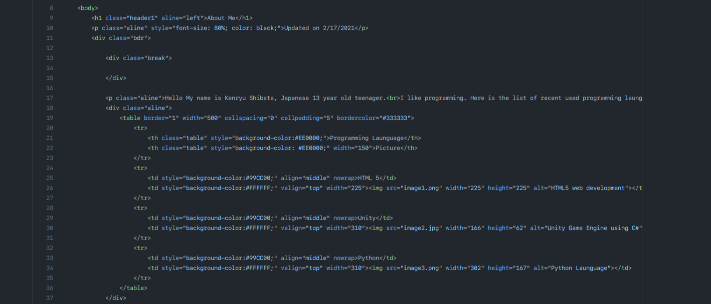
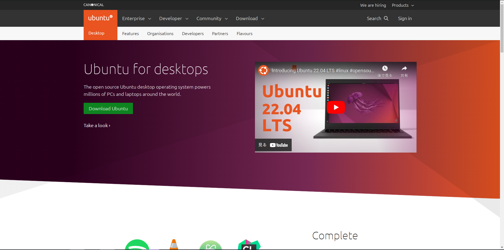
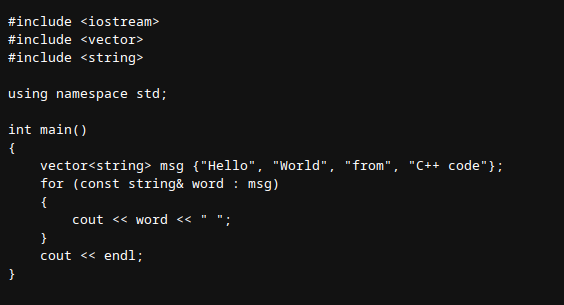

-
My first experience with programming was the Scratch. I signed up on it and that started the 5 years of journey.
2017 Spring

-
My father gave me the first personal computer, it was the decade old laptop(seemed to be windows XP era) which the chromium os installed and required to be plugged into the power for whole time. Ended its life with broken charging port.
2017 Spring

-
Read the article about the Raspberry PI, the opensource single board computer on the magazine and I bought it. (though I didn't have ANY knowledge of Linux OS)
2017 Summer

-
After spending about 10 months of programming on Scratch, my parents introduced me to the one day class of Python in local public library.
2017 Autumn

-
Got the chromebook in the Christmas. Wrote the first HTML file.
2018 Winter

-
About year later, chromebook gained the beta support of Linux container. I started to use it and gained the basics of Linux. (commands and package management)
2019 Autumn

-
Started to use Unity, the game engine ... on chromebook, more knowledge of Linux (Desktop Environments), and did programming more offten in Python.
2020 October

-
Joined to Github, the developer platform to make the issue(bug report) of the chromium os based system on Raspberry Pi. And Created the first git repository called
Kenryusprogramming(today'sKenryusSideProjects)2020 December

-
Got the first Windows computer; Intel nuc, Core i7-5557U, 16GB RAM, One 1 TB SSD, Windows 10 Professional. Gained the concept of virtual machine. The Morning of Technology Revolution
2021 January
-
First public website. The website was created for the assignment of Computer Exploration class in the middle school in California I used to go. It was deployed using Github. Link to the Website(It's so Ugly and hurtting my eyes!)
2021 February
 -
Got the another decade old laptop which my mother used it since I was little. I installed and tried Linux distributions more than 30 times both on virtual machine and the laptop in a few months. The first Linux Distribution installed on real machine was Ubuntu 20.04. Gained even more knowledge of Linux.
2021 Spring
 -
Started the Minecraft server on the laptop used in spring. The first self-hosted server that port forwared(made public) to the internet. (It is closed now.) Played with my friend in California from Pittsburgh after I moved back.
2021 June

-
On my birthday, I ordered Japanese programming book about Java, Unity, Android, and Javascript.
2021 August
-
First
touchof C++2021 November 26
 -
My Intel nuc setup fully converted to Linux.
Start of Open-Sorce Computing2022 January 4
-
Replaced the Intel nuc with the computer my father built which spec is double of Intel nuc (Intel Core i7 10700K, RAM 32GB, 1 TB SSD + 1 TB HDD, NVIDIA GeForce RTX 2080 Ti)
2022 January 25

-
Started to learn C++
2022 May

-
Learning more programming languages, developing game, and learning AI.
Today(2022 Autumn)